전자계산기기능사 (2004-04-04 기출문제)
1과목: 전기전자공학
1. 다이오드를 사용한 브리지정류회로는 주로 어떤 정류회로인가?
- 반파 정류회로
- 전파 정류회로
- 배전압 정류회로
- 정전압 정류회로
(정답률: 48%)

2. 10Ω과 15Ω의 저항을 병렬로 연결하고 50A의 전류를 흘렸을 때 15Ω에 흐르는 전류는 몇 A인가?
- 10
- 20
- 30
- 40
(정답률: 48%)
3. 전지 등의 기전력을 정확하게 측정하기 위하여 피측정 회로로부터 전류의 공급을 받지 않고 측정하는 방법은?
- 전압강하법
- 전위차계법
- 검류계법
- 브리지법
(정답률: 34%)
4. Y결선 회로의 선간전압이 210V인 3상평형에서 상전압은약 몇 V인가?
- 110
- 121
- 297
- 364
(정답률: 39%)
5. 그림과 같은 트랜지스터회로의 동작설명 중 옳지 않은 것은?
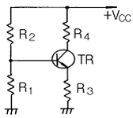
- R1이 단선되면 베이스 전압이 상승하여 컬렉터전류가 증가한다.
- R2가 단선되면 베이스 전류가 흐르지 않게 되어 컬렉터전압은 증가한다.
- R3가 단선되면 이미터전류가 흐르지 않게 되어 컬렉터전압은 저하한다.
- TR의 베이스-이미터 간에는 R1과 R3의 단자전압의 차가 걸리게 된다.
(정답률: 53%)
6. 그림(a)에 입력으로 그림(b)를 넣을 때 출력은? (단, A는 연산증폭기이다.)
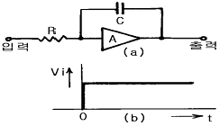
- 펄스전압
- 스탭전압
- 크기가 직선적으로 증가하는 전압
- 크기가 지수함수적으로 감소하는 전압
(정답률: 43%)
7. UJT를 사용한 펄스 발생회로이다. 펄스 출력파형은?
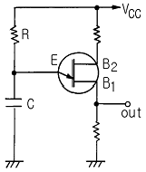
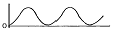
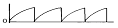
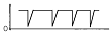
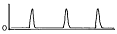
(정답률: 40%)
8. 주파수변조에서 변조지수는? (단, fm : 변조주파수, fo : 반송주파수, △f : 반송주파수 부터의 편이이다.)
- (fo-△f)/fm
- fm/(fo-△f)
- fo/fm
- △f/fm
(정답률: 46%)
9. 주어진 회로의 정현파 입력에 대한 출력파형은? (단, Vin의 최대값＞VB이다.)
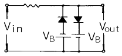
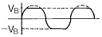
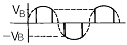
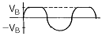
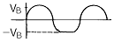
(정답률: 47%)
10. 그림과 같은 회로의 입력측에 정현파를 가할 때 출력측에 나오는 파형은 어떻게 되는가? (단, vi=Vmsinωt[V]이고 Vm＞Vʀ이다.)
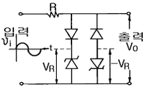
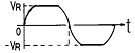
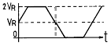
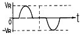
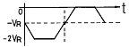
(정답률: 62%)
2과목: 전자계산기구조
11. 자료가 리스트에 첨가되는 순서에서 그 반대의 순서대로만 처리 가능한 것을 LIFO 리스트라 하는데 이것을 무엇이라 부르는가?
- 큐(Queue)
- 스택(Stack)
- 데크(Deque)
- 피포(FIFO)
(정답률: 69%)
12. 입력단자와 출력단자는 각각 하나이며, 입력단자가 1이면 출력 단자는 0이 되고, 입력단자가 0이면 출력 단자가 1이 되는 회로는?
- 플립플롭 회로
- NOT 회로
- OR 회로
- AND 회로
(정답률: 75%)
13. 3K Word Memory의 실제 Word 수는?
- 3000
- 3072
- 4⑤6
- 4096
(정답률: 74%)
14. 일부분의 비트 또는 문자를 지울 때 사용하는 연산은?
- OR
- AND
- MOVE
- SHIFT
(정답률: 68%)
15. 마이크로 오퍼레이션에 대한 다음 정의 중 옳은 것은?
- 레지스터 상호간에 저장된 데이터의 이동에 의해 이루어지는 동작
- 컴퓨터의 빠른 계산 동작
- 플립플롭 내에서 기억되는 동작
- 2진수 계산에서 쓰이는 동작
(정답률: 69%)
16. 입·출력에 필요한 기능이 아닌 것은?
- 입·출력 버스
- 입·출력 인터페이스
- 입·출력 제어장치
- 입·출력 기억장치
(정답률: 39%)
17. 잘못된 정보를 발견하고, 수정할 수 있도록 한 코드는?
- BCD 코드
- 해밍 코드
- 그레이 코드
- 3초과 코드
(정답률: 81%)
18. 출력 장치 중에서 X축과 Y축을 움직여 종이에 그림을 그려주는 장치는?
- 마우스
- 모니터
- 스피커
- 플로터
(정답률: 85%)
19. 주기억 장치로부터 제어장치로 해독할 명령을 꺼내오는 것을 무엇이라 하는가?
- 실행(execution)
- 단항 연산(unary operation)
- 직접 번지(direct address)
- 명령어 인출(instruction fetch)
(정답률: 86%)
20. 보조기억장치(하드디스크)의 전체 용량을 주기억장치인 것처럼 사용하는 형태로 기억공간을 확대하여 사용하는 메모리는?
- RAM
- ROM
- Flash Memory
- Virtual Memory
(정답률: 48%)
21. 2진수 (10110)2을 2의 보수로 변환한 값은?
- 01001
- 01010
- 11001
- 11010
(정답률: 75%)
22. 기억장치의 종류 중 소멸성 기억장치(destructive memory)와 비소멸성 기억장치(nondestructive memory)를 가장 잘 설명한 것은?
- 소멸성 기억장치-전원을 꺼도 기억시킨 내용이 그대로 남아 있는 기억장치
- 소멸성 기억장치-전원과 관계없이 기억하는 기억장치
- 비소멸성 기억장치-전원을 끄면 기억내용이 지워지는 기억장치
- 비소멸성 기억장치-전원을 꺼도 기억시킨 내용이 남아 있는 기억장치
(정답률: 67%)
23. 접속한 두 장치 사이에서 데이터의 흐름 방향이 한 방향으로 한정되어 있는 통신 방식은?
- Simplex 통신 방식
- Half duplex 통신 방식
- Full duplex 통신 방식
- Multi point 통신 방식
(정답률: 53%)
24. 펄스가 입력되면 현재와 반대의 상태로 바뀌게 하는 토글(toggle) 상태를 만드는 회로는?
- R 플립플롭
- T 플립플롭
- RS 플립플롭
- JK 플립플롭
(정답률: 83%)
25. 단항(unary) 연산인 것은?
- OR
- MOVE
- XOR
- AND
(정답률: 73%)
26. 근거리의 컴퓨터들을 서로 연결하여 상호간에 통신이 이루어지도록 한 것은?
- LAN
- VAN
- ISDN
- WAN
(정답률: 78%)
27. 명령 코드부가 4비트, 번지부가 8비트로 이루어진 명령어 형식에서 명령어와 어드레스의 개수는?
- 명령어 4개, 어드레스 8개
- 명령어 4개, 어드레스 128개
- 명령어 16개, 어드레스 128개
- 명령어 16개, 어드레스 256개
(정답률: 55%)
28. MOS 트랜지스터를 집적한 것으로 일정 시간이 지나면 기억 내용이 지워지므로 주기적으로 재충전(Refresh)이 필요한 메모리는?
- DRAM
- SRAM
- PROM
- EPROM
(정답률: 62%)
29. 컴퓨터 내부에서 수치 자료를 표현하는 방식이 아닌 것은?
- 유동 소숫점 방식(floating format)
- 고정 소숫점 방식(fixed point)
- 팩 형식(pack format)
- ASCII
(정답률: 50%)
30. 사진이나 그림 등에 빛을 쪼여 반사되는 것을 판별하여 복사하는 것처럼 이미지를 입력하는 장치는?
- 플로터
- 마우스
- 프린터
- 스캐너
(정답률: 81%)
3과목: 프로그래밍일반
31. 어셈블리어로 작성된 프로그램을 기계어로 번역하는 번역 프로그램을 의미하는 것은?
- 매크로
- 컴파일러
- 프리프로세서
- 어셈블러
(정답률: 47%)
32. 명령 단위로 차례로 번역하여 즉시 실행하는 방식의 언어 번역 프로그램은?
- 컴파일러
- 운영체제
- 로더
- 인터프리터
(정답률: 37%)
33. 운영체제의 제어 프로그램에 해당하지 않는 것은?
- 감시 프로그램
- 서비스 프로그램
- 작업관리 프로그램
- 자료관리 프로그램
(정답률: 58%)
34. 프로그래밍 언어를 사용하여 사용자가 어떤 업무 처리를 위하여 작성한 프로그램을 의미하는 것은?
- 목적 프로그램
- 컴파일러
- 원시 프로그램
- 로더
(정답률: 38%)
35. 프로그램의 번역 과정에서 발생되는 오류는?
- 문법적 오류
- 논리적 오류
- 의미적 오류
- 물리적 오류
(정답률: 62%)
36. 프로그래밍 절차를 나타낸 것이다. 순서가 가장 적절한 것은?
- 프로그램 입력 - 논리오류 수정 - 모의자료 입력 -문법오류 수정 - 실행
- 프로그램 입력 - 모의자료 입력 - 논리오류 수정 -문법오류 수정 - 실행
- 프로그램 입력 - 문법오류 수정 - 모의자료 입력 -논리오류 수정 - 실행
- 프로그램 입력 - 논리오류 수정 - 문법오류 수정 -모의자료 입력 - 실행
(정답률: 30%)
37. 구조적 프로그래밍의 기본구조와 거리가 먼 것은?
- 순차구조
- 선택구조
- 병행구조
- 반복구조
(정답률: 62%)
38. 운영체제의 평가기준으로 거리가 먼 것은?
- 처리능력
- 사용가능도
- 비용
- 신뢰도
(정답률: 86%)
39. 로더의 기능이 아닌 것은?
- 할당
- 링킹
- 재배치
- 번역
(정답률: 75%)
40. 구조적 프로그래밍의 효과에 대한 설명으로 거리가 먼 것은?
- 프로그램의 정확도가 향상된다.
- 프로그램의 구조가 간결하다.
- 문서로서의 역할을 한다.
- 프로그램의 수정은 쉬우나 유지하기가 까다롭다.
(정답률: 68%)
4과목: 디지털공학
41. 다음 그림에서 논리식은?
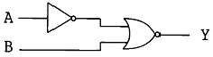
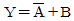
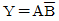
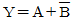
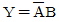
(정답률: 36%)
42. 다음 표는 어떤 게이트의 진리표인가?
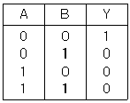
- AND
- OR
- EOR
- NOR
(정답률: 74%)
43. 레지스터(Register)를 구성하는 기본 소자는?
- Flip-Flop(플립플롭)
- Encoder(부호기)
- Decoder(해독기)
- Adder(가산기)
(정답률: 82%)
44. 그림은 반가산기 회로이다. 자리올림 단자는?
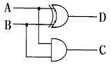
- A
- B
- C
- D
(정답률: 63%)
45. 다음 논리 기호 중 배타적 논리합 회로는?
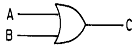
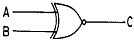
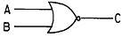
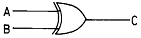
(정답률: 54%)
46. 다음 그림의 게이트 명칭은?
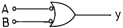
- OR
- AND
- NAND
- NOR
(정답률: 42%)
47. 림과 같은 플립플롭의 명칭은?
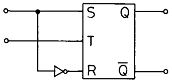
- RS
- T
- D
- JK
(정답률: 46%)
48. 전가산기를 반가산기를 이용하여 구성하려고 한다. 필요한 반가산기의 개수와 게이트의 명칭은?
- 반가산기 1개, NAND
- 반가산기 1개, NOR
- 반가산기 2개, OR
- 반가산기 2개, AND
(정답률: 60%)
49. JK 마스터슬레이브 플립플롭에서 J=K=1인 상태에서 클럭 펄스가 "1"일 때 출력상태가 변화되면 입력측에 변화를 일으켜 오동작이 발생되는 현상은?
- 채터링 현상
- 레이스 현상
- 오버플로어 현상
- 토글 현상
(정답률: 22%)
50. 다음 중 드모르간(De Morgan) 정리로 옳은 것은?
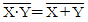
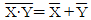
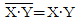
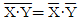
(정답률: 72%)
51. 컴퓨터 키보드와 같이 입력 단자에 나타난 정보를 코드화 하여 출력으로 내보내는 것은?
- 해독기(Decoder)
- 부호기(Encoder)
- 멀티플렉서(Multiplexer)
- 디멀티플렉서(Demultiplexer)
(정답률: 43%)
52. 10진수 3을 Gray Code 4bit로 올바르게 바꾼 것은?
- 0001
- 0010
- 0011
- 0100
(정답률: 50%)
53. 다음 식이 성립할 때 A, B는?
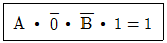
- A=1, B=1
- A=0, B=0
- A=0, B=1
- A=1, B=0
(정답률: 65%)
54. JK-FF에서 J입력과 K입력이 모두 1일 때 출력은 CLOCK에 의해 어떻게 되는가?
- 반전된다.
- 출력은 0이다.
- 기억을 유지한다.
- 출력은 1이다.
(정답률: 81%)
55. 가장 간단한 레지스터 회로는 외부 게이트가 전혀 없이 어떤 회로로 구성되어 지는가?
- 플립플롭
- AND 게이트
- X-OR 게이트
- 자기코어
(정답률: 68%)
56. 2진화 10진수로 표시된 (10000101) BCD 을 10진수로 나타낸 것은?
- 85(10)
- 83(10)
- 58(10)
- 53(10)
(정답률: 68%)
57. 패리티 비트(parity bit)에 대한 설명으로 가장 올바른 것은?
- 에러를 검색만 할 수 있다.
- 에러를 교정만 할 수 있다.
- 에러의 검색과 교정까지 가능하다.
- 에러 발생을 예방하는 기능이 있다.
(정답률: 50%)
58. 불 대수식 중 성립하지 않는 것은?
- A + A = A
- A + 1 = 1
- A + A' = 1
- A ㆍ A = 1
(정답률: 65%)
59. 2 × 4 디코더에 사용되는 AND 게이트의 최소 개수는?
- 1개
- 2개
- 3개
- 4개
(정답률: 32%)
60. 16진 상향 계수기를 설계하기 위하여 최소로 필요한 JK 플립플롭의 개수는?
- 1개
- 2개
- 3개
- 4개
(정답률: 78%)